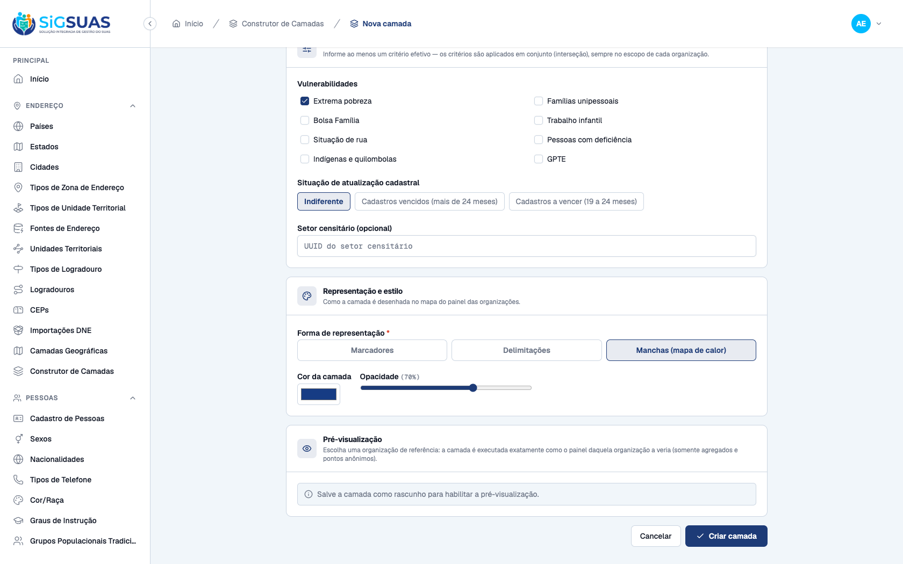
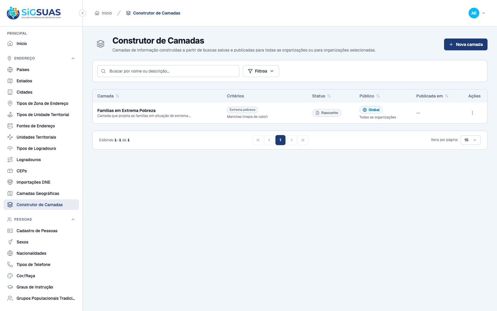
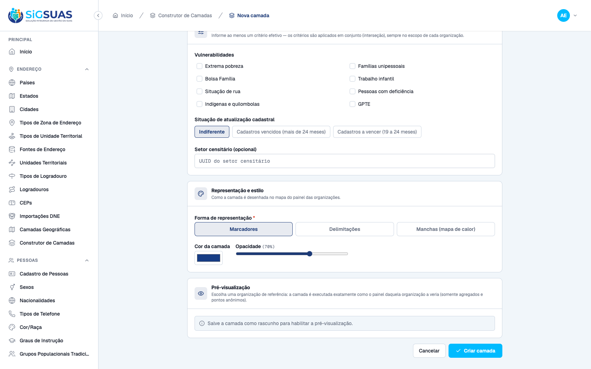
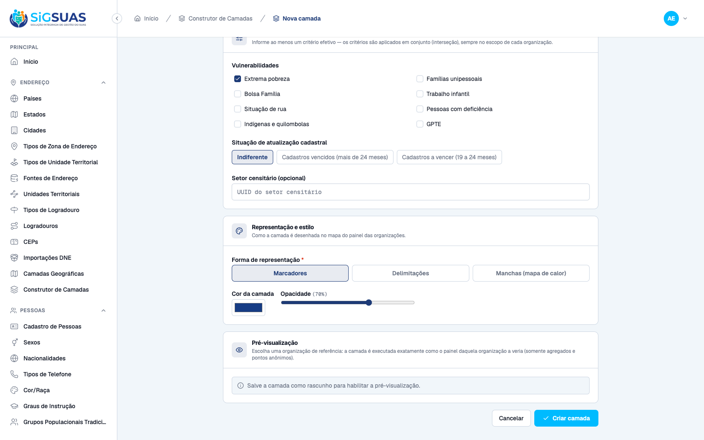
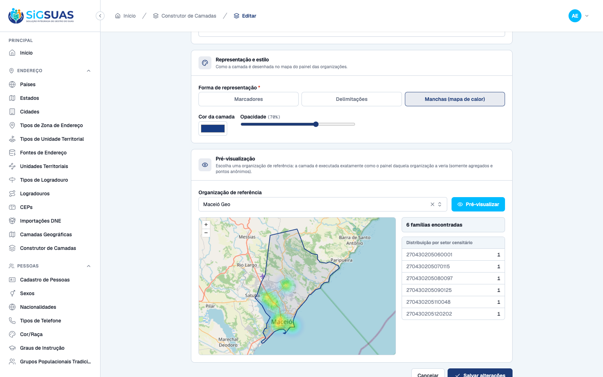
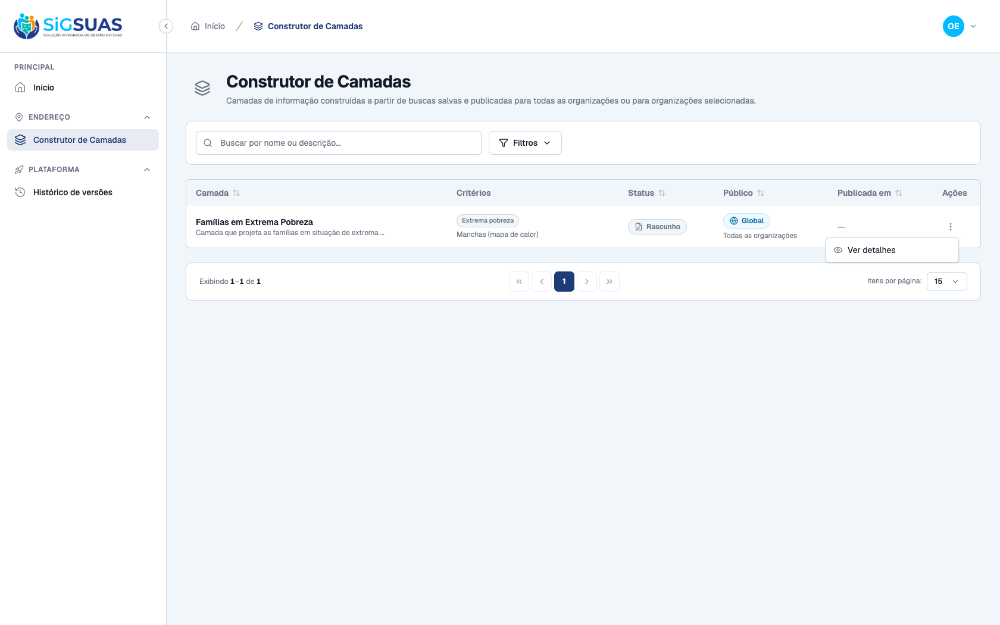

Os 5 critérios de aceite da HU #9883 sobre o Construtor de Camadas (rota admin /geo-layers — base estrutural do painel /georreferenciamento do client) foram verificados dirigindo o app admin real no navegador e reforçados pela suíte automatizada — todos ATENDIDOS. CA37: como Administrador, informando nome, descrição, um critério de busca (Extrema pobreza) e a forma de representação (Manchas/heatmap) e salvando, a camada é criada com status Rascunho e passa a constar no catálogo (POST /geo-layers 201). CA38: ao tentar salvar sem nome e sem critério, o sistema bloqueia e indica claramente os pendentes ("Informe o nome da camada." e "Informe ao menos um critério efetivo..."). CA39: ao salvar outra camada com o mesmo nome, o sistema bloqueia (422) e informa "Já existe uma camada com este nome." (unicidade case-insensitive). CA40: na camada em rascunho (modo edição), escolhendo o município de referência Maceió Geo e acionando a pré-visualização, o mapa (OpenLayers) exibe a representação (heatmap) sobre o município conforme os critérios — 6 famílias em extrema pobreza, com distribuição por setor censitário. CA41: como Operacional Global (só geo-layers.index/show), o catálogo mostra a lista com status e público de cada camada, sem os comandos de criação/edição/publicação (botão "Nova camada" oculto; menu de ações apenas "Ver detalhes"). Cobertura automatizada: Pest GeoLayerControllerTest (26 testes/150 asserções) cobre criar rascunho, bloqueio por obrigatórios, nome duplicado case-insensitive, preview WYSIWYG por tenant e o gate read-only do admin_operador (writes 403 — RN01).
| CA | Critério | Status |
|---|---|---|
| CA37 | Criação de camada válida (rascunho no catálogo) | ATENDIDO · navegador |
| CA38 | Bloqueio por dados obrigatórios | ATENDIDO · navegador |
| CA39 | Nome duplicado | ATENDIDO · navegador |
| CA40 | Pré-visualização sobre município de referência | ATENDIDO · navegador |
| CA41 | Consulta sem permissão de edição (Operacional Global) | ATENDIDO · navegador |
Critério (Gherkin): Dado que sou Administrador e as bases geográficas primárias estão homologadas, Quando informo nome, descrição, critérios de busca e forma de representação e salvo, Então a camada é criada com status de rascunho e passa a constar no catálogo.
Como foi testado: Como Administrador (44983702016), em Construtor de Camadas → Nova camada: informado nome "Famílias em Extrema Pobreza", descrição, critério Extrema pobreza e forma de representação Manchas (mapa de calor) → Criar camada.


Critério (Gherkin): Dado que estou criando uma camada, Quando tento salvar sem nome ou sem ao menos um critério de busca, Então o sistema bloqueia a ação e indica claramente os itens pendentes.
Como foi testado: Em Nova camada, acionado Criar camada sem preencher nome e sem marcar nenhum critério.

Critério (Gherkin): Dado que já existe uma camada com determinado nome, Quando tento salvar outra camada com o mesmo nome, Então o sistema bloqueia e informa que o nome já está em uso.
Como foi testado: Em Nova camada, informado o nome já existente "Famílias em Extrema Pobreza" (+ 1 critério e representação) → Criar camada.

Critério (Gherkin): Dado que criei uma camada em rascunho, Quando aciono a pré-visualização escolhendo um município de referência, Então o sistema exibe a representação da camada sobre o mapa daquele município conforme os critérios definidos.
Como foi testado: Aberta a camada rascunho em modo edição, selecionada a Organização de referência "Maceió Geo" no combobox e acionado Pré-visualizar.

Critério (Gherkin): Dado que sou Operacional Global, Quando acesso o catálogo de camadas, Então visualizo a lista com status e público de cada camada, sem comandos de criação, edição ou publicação.
Como foi testado: Reautenticado como Operacional Global (papel admin_operador) e aberto o catálogo Construtor de Camadas; aberto o menu de ações da linha.

=== Cobertura automatizada — GeoLayerController (CA37-CA41 / RN01-RN08) === (re-executado ao vivo em 10/07/2026 contra a stack Sail) PASS Tests\Feature\Api\Manager\GeoLayerControllerTest ✓ it creates a layer as draft with normalized criteria and it shows u… 0.48s ✓ it blocks creation without name or without any criterion (CA38) 0.03s ✓ it rejects criteria outside the panel vocabulary (P3) 0.02s ✓ it blocks a duplicated name case-insensitively, but frees it after… 0.03s ✓ it filters the catalog by status and audience (CA51) 0.04s ✓ it shows the layer detail with audience tenants and the full audit… 0.04s ✓ it updates the current definition of a published layer (CA47) 0.02s ✓ it keeps the unique name rule on update, ignoring the layer itself… 0.03s ✓ it does not expose DELETE — the missing verb answers 405 (P5/RN06) 0.02s ✓ it blocks publish while BOTH national bases are not homologated (CA… 0.03s ✓ it publishes globally: empty pivot means every active tenant, prese… 0.03s ✓ it publishes to selected tenants only (CA43/RN04) 0.03s ✓ it requires the tenant list when publishing to a selected audience 0.03s ✓ it rejects publishing a layer that is not a draft (RN06) 0.03s ✓ it changes the audience of a published layer with immediate pivot s… 0.04s ✓ it only allows changing the audience of published layers (RN06) 0.02s ✓ it inactivates a published layer and rejects invalid transitions (C… 0.03s ✓ it reactivates an inactive layer back to the CONFIGURED audience (C… 0.03s ✓ it revalidates the RN03 gate on reactivation (CA44/CA49) 0.02s ✓ it rejects reactivating a layer that is not inactive (RN06) 0.03s ✓ it previews the layer under the single reference tenant — WYSIWYG,… 0.05s ✓ it never leaks another tenant of the same municipality into the pre… 0.05s ✓ it rejects the preview when the reference tenant has no homologated… 0.02s ✓ it requires a valid tenant_uuid on preview 0.02s ✓ it gives the admin_operador read-only access — every write is 403 (… 1.08s ✓ it gives the ADMIN every geo-layers ability through the automatic h… 1.05s Tests: 26 passed (150 assertions) Duration: 3.72s